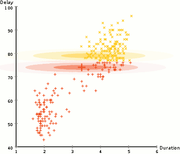

Clustering
Analysis
Created by 马明
Content
- Initial view on clustering: K-means
- Overview on Clustering Analysis
- Step by step on clustering algorithms
- Hierarchical clustering
- Density-based clustering
- Partitioning methods
- Fuzzy clustering
- Model-based clustering
Initial view on clustering
K-Means
- K-means works by selecting k central points, or means, hence K-Means
- Performs iterative (repetitive) calculations to optimize the positions of the centroids
- Time complexity: $O(n^2)$ or $O(n*k*I*d)$ (Lloyds algorithm)
- May not be repeatable and lack consistency
- K-Medians is less sensitive to outliers
kmeans 2 failures
Gaussian Mixture Models (GMMs) give us more flexibility than K-Means
With GMMs we assume that the data points are Gaussian distributed
Two parameters to describe the shape of the clusters: the mean and the standard deviation
Expectation–Maximization (EM) used to find parameter for each cluster
- Kmean can be treated as a special case of GMM
- GMM support mixed membership
Overview on Clustering Analysis
- Clustering is a Machine Learning technique that involves the grouping of data points
- In theory, data points that are in the same group should have similar properties and/or features, while data points in different groups should have highly dissimilar properties and/or features
- Clustering is a method of unsupervised learning and is a common technique for statistical data analysis used in many fields
- We can use clustering analysis to gain some valuable insights from our data
How to evaluate a cluster algorithm?
- Internal measures for cluster validation
- Silhouette coefficient
- Dunn index
- External measures for clustering validation
核心思想：类内距离尽可能小；类间距离近可能大
大部分评价方法主要衡量三个方面：
- Compactness
- Separation
- Connectivity
$Index = \frac{(\alpha \times Separation)}{(\beta \times Compactness)}$
Silhouette coefficient
The silhouette analysis measures how well an observation is clustered and it estimates the average distance between clusters
For each observation $i$ , the silhouette width $s_i$ is calculated as follows:
-
For each observation $i$ , calculate the average dissimilarity $a_i$ between $i$ and all other points of the cluster to which $i$ belongs
-
For all other clusters $C$ ,to which $i$ does not belong, calculate the average dissimilarity $d(i,C)$ of $i$ to all observations of $C$ .The smallest of these $d(i,C)$ is defined as $b_i= \min_C d(i,C)$. The value of $b_i$ can be seen as the dissimilarity between $i$ and its “neighbor” cluster
-
Finally the silhouette width of the observation $i$ is defined by the formula: $S_i = (b_i - a_i)/max(a_i, b_i)$
Dunn index
For each cluster, compute the distance between each of the objects in the cluster and the objects in the other clusters
Use the minimum of this pairwise distance as the inter-cluster separation (min.separation)
-
For each cluster, compute the distance between the objects in the same cluster.
-
Use the maximal intra-cluster distance (i.e maximum diameter) as the intra-cluster compactness
Calculate the Dunn index (D) as follow: $D = \frac{min.separation}{max.diameter}$
How to choose $k$
- Elbow method
- Average silhouette method
- Gap statistic method
Elbow method
- Looks at the total WSS(Within-cluster Sum of Square) as a function of the number of clusters
- The location of a bend (knee) in the plot is generally considered as an indicator of the appropriate number of clusters
Average silhouette method
- Average silhouette method computes the average silhouette of observations for different values of $k$
- The optimal number of clusters $k$ is the one that maximize the average silhouette over a range of possible values for $k$
Gap statistic method
- Cluster the observed data, varying the number of clusters from $k = 1, ... , k_{max}$, and compute the corresponding total within intra-cluster variation $W_k$.
- Generate B reference data sets with a random uniform distribution. Cluster each of these reference data sets with varying number of clusters $k = 1, ... , k_{max}$, and compute the corresponding total within intra-cluster variation $W_{kb}$
- Compute the estimated gap statistic as the deviation of the observed $W_k$ value from its expected value $W_{kb}$ under the null hypothesis: $Gap(k) = \frac{1}{B} \sum\limits_{b=1}^B log(W_{kb}^*) - log(W_k)$
- Choose the number of clusters as the smallest value of $k$ such that the gap statistic is within one standard deviation of the gap at $k+1$ : $Gap(k)\ge Gap(k+1)-S_{k+1}$
Hierarchical clustering
Top-down and Bottom-up

How do we define "distance"?
Linkage
Complete
Group Average
Ward's Method
$$d(A,B)=SSE_{A\cup B}-(SSE_A+SSE_B)$$
Advanced Hierarchical clustering
- BIRCH: uses CF-tree and incrementally adjusts the quality of sub-clusters
- CURE: selects well-scattered points from the cluster and then shrinks them towards the center of the cluster by a specified fraction
- CHAMELEON: hierarchical clustering using dynamic modeling
Balanced Iterative Reducing and Clustering using Hierarchies
- Incrementally construct a CF (Clustering Feature) tree, a hierarchical data structure for multiphase clustering
- Scan DB to build an initial in-memory CF tree(a multi-level compression of the data that tries to preserve the inherent clustering structure of the data)
- Use an arbitrary clustering algorithm to cluster the leaf nodes of the CF-tree
- Scales linearly
- Weakness: handles only numeric data, and sensitive to the order of the data record
Clustering Feature: $CF=(N,\overrightarrow{LS},SS)$
$N$ : Number of data points
$LS$ : $\sum_{i=1}^N=\overrightarrow{X_i}$
$SS$ : $\sum_{i=1}^N=\overrightarrow{X_i}^2$
- A CF tree is a height-balanced tree that stores the clustering features for a hierarchical clustering
The nonleaf nodes store sums of the CFs of their children
- Two parameters:
Branching factor: maximum number of children
Threshold: max diameter of sub-clusters stored at the leaf nodes
CF Tree
CHAMELEON algorithm
- 相对互连性
$$RI(C_i,C_j)=\frac{2\times |EC(C_i,C_j)|}{|EC(C_i)|+|EC(C_j)|}$$
- 相对近似性
$$RC(C_i,C_j)=\frac{(|C_i|+|C_j|)EC(C_i,C_j)}{|C_j|EC(C_i)+|C_i|EC(C_j)}$$
$C_i$ 表示聚簇 $i$ 内数据点的个数，$EC(C_i)$ 表示的是 $C_i$ 内边的权重和，$EC(C_i,C_j)$ 表示连接两个聚簇的边的权重和。
- 度量函数用来判断两个聚簇是否合并：
$RI(C_i,C_j) \times RC(C_i,C_j)^\alpha$
Density-Based clustering
Mean-Shift Clustering
- Mean shift clustering is a sliding-window-based algorithm that attempts to find dense areas of data points
- The goal is to locate the center points of each group/class

- We begin with a circular sliding window centered at a point C (randomly selected) and having radius r as the kernel
- Mean shift is a hill climbing algorithm which involves shifting this kernel iteratively to a higher density region on each step until convergence
Density-Based Spatial Clustering of Applications with Noise (DBSCAN)

- No need to determine $k$
- Doesn’t perform well when the clusters are of varying density
- DBSCAN begins with an arbitrary starting data point that has not been visited
- The neighborhood of this point is extracted using a distance epsilon $\epsilon$ (All points which are within the $\epsilon$ distance are neighborhood points)
- If there are a sufficient number of points (according to minPoints) within this neighborhood then the clustering process starts and the current data point becomes the first point in the new cluster.Otherwise, the point will be labeled as noise.
In both cases that point is marked as “visited”
- This procedure repeated for all of the new points that have been just added to the cluster group
- This process of steps 2 and 3 is repeated until all points in the cluster are determined i.e all points within the ε neighborhood of the cluster have been visited and labelled
- Once we’re done with the current cluster, a new unvisited point is retrieved and processed, leading to the discovery of a further cluster or noise
- This process repeats until all points are marked as visited
Fuzzy clustering
Fuzzy clustering (also referred to as soft clustering or soft k-means) is a form of clustering in which each data point can belong to more than one cluster
Fuzzy c-means (FCM) clustering
- Similar to the k-means algorithm
-
- Choose a number of clusters
- Assign coefficients randomly to each data point for being in the clusters
- Repeat until the algorithm has converged (that is, the coefficients' change between two iterations is no more than ε , the given sensitivity threshold)
Compute the centroid for each cluster
For each data point, compute its coefficients of being in the clusters
Centroid
Any point $x$ has a set of coefficients giving the degree of being in the kth cluster $w_k(x)$, the centroid is defined as: $c_k=\frac{\sum_xw_k(x)^mx}{\sum_xw_k(x)^m}$
$m$ is the hyper-parameter that controls how fuzzy the cluster will be
Given a finite set of data, the algorithm returns a list of $c$ cluster centres $C=\{c_1,\cdots,c_c}$ and a partition matrix $W=w_{ij} \in [0,1]$, $i=1,\cdots,n$, $j=1,\cdots,c$
$w_{ij}$ , tells the degree to which element, $x_i$, belongs to cluster $c_j$
The FCM aims to minimize an objective function: $argmin_C \sum_{i=1}^n \sum_{j=1}^cw_{ij}^m||x_i-c_j||^2$
Partition Clustering Algorithm
- K-medoids
- CLARA
- CLARANS
K-medoids
- Also referred as PAM (Partition Around Medoids)
- Instead of taking the mean value of the object in a cluster as a reference point, medoids can be used, which is the most centrally located object in a cluster
- PAM works effectively for small data sets, but doesn't scale well for large data sets
CLARA
CLARA (Clustering Large Applications, (Kaufman and Rousseeuw 1990)) is an extension to k-medoids (PAM) methods to deal with data containing a large number of objects (more than several thousand observations) in order to reduce computing time and RAM storage problem
This is achieved using the sampling approach
- Draw multiple samples and apply PAM on each
- Returns best clustering
CLARANS
- Clustering Large Applications based on RAN-domized Search
- Use sampling and PAM
- Perform graph search with each node acting as a potential solution, that is a set of $k$ medoids
- Clustering got after replacement - Neighbour
- Moves to better neighbour
- Focus on spatial access structure
- More efficient and scalable than PAM and CLARA
Grid-based clustering algorithms
- STING: A Statistical Information Grid Approach
- WaveCluster: Use Wavelet Tranformation
- CLIQUE
Clustering In QUEst
CLIQUE can be considered as both density-based and grid-based
- Partitions each dimension into the same number of equal length interval
- Partitions an m-dimensional data space into nonoverlapping rectangular units
- A unit is dense if the fraction of total data points contained in the unit exceeds the input model parameter
- A cluster is a maximal set of connected dense units within a subspace
Spectral Clustering
Graph-based Clustering
3 Major steps for Spectral Clustering
- Create a similarity graph between our N objects to cluster
- Compute the first k eigenvectors of its Laplacian matrix to define a feature vector for each object
- Run k-means on these features to separate objects into k classes
Spectral Clustering VS Kmeans
图论基本知识
我们一般用点的集合 $V$ 和边的集合 $E$ 来描述一个图，记为 $G(V,E)$
其中，$V$ 即数据中的所有点 $(v_1, v_2,...v_n)$. 定义权重 $w_{ij}$ 为点 $v_i$ 与 $v_j$ 之间的权重. $w_{ij}$ 构成了图的邻接矩阵 $W_{n\times n}$
每个点的度 $d$ 定义为 $d_i = \sum\limits_{j=1}^{n}w_{ij}$
度矩阵为对角矩阵：$\mathbf{D} = \left( \begin{array}{ccc} d_1 & \ldots & \ldots \\ \ldots & d_2 & \ldots \\ \vdots & \vdots & \ddots \\ \ldots & \ldots & d_n \end{array} \right)$
Step 1 — Compute a similarity graph
- The ε-neighborhood graph
- The KNN graph
- Fully connected graph
$$w_{ij}=s_{ij}=exp(-\frac{||x_i-x_j||_2^2}{2\sigma^2})$$
Step 2 — Project the data onto a low-dimensional space
- Compute eigenvalues and eigenvectors for L
- Spectrum of Laplacian
$0=\lambda_1 \le \lambda_2 \le \cdots \le \lambda_k$
- Graph $G$ has $k$ connected components
- The greater $\lambda_2$, the greater the connectivity
Laplacian Matrix
Step 3 — Create clusters
- Modify our Laplacian to normalize it: $L_{norm}=D^{-1/2}LD^{-1/2}$
- 对于 $k$ 个 cluster, 得到前 $k$ 个特征向量 $\{v_1,v_2,\cdots,v_k\}$
- 令 $U \in \mathbb{R}^{n \times k}$ 为以 $v_1,\cdots,v_k$ 为列向量的矩阵
- For $i=1,\cdots,n$ , 令 $y_i$ 为 $U$ 中对应的行向量, 其表示了每个节点的属性向量
- 用k-means算法来对这些结点进行聚类，得 $\{C_1,C_2,\cdots,C_k\}$
Spectral Clustering
Advantages
- Does not make strong assumptions on the statistics of the clusters
- Easy to implement and gives good clustering results
- Reasonably fast for sparse data sets of several thousand elements
Disadvantages
- Use of K-Means clustering in the final step implies that the clusters are not always the same
- Computationally expensive for large datasets
Intuition behind Spectral Clustering
Graph Partitioning
Graph cut
An intuitive goal is find the partition that minimizes the cut
$cut(A,B)=\sum_{i\in A,j\in B}W_{ij}=0.3$
Normalized Cut
Consider the connectivity between groups relative to the volume of each group
Minimized when $Vol(A)$ and $Vol(B)$ are equal, thus encourage balanced cut
$min_xNcut(x)=min_yy^T(D-W)y$, $y^TDy=1$
Markdown support
Write content using inline or external Markdown. Instructions and more info available in the readme.
<section data-markdown>
## Markdown support
Write content using inline or external Markdown.
Instructions and more info available in the [readme](https://github.com/hakimel/reveal.js#markdown).
</section>
Fragments
Hit the next arrow...
... to step through ...
... a fragmented slide.
Fragment Styles
There's different types of fragments, like:
grow
shrink
fade-out
fade-up (also down, left and right!)
current-visible
Highlight red blue green
Transition Styles
You can select from different transitions, like:
None -
Fade -
Slide -
Convex -
Concave -
Zoom
Themes
reveal.js comes with a few themes built in:
Black (default) -
White -
League -
Sky -
Beige -
Simple
Serif -
Blood -
Night -
Moon -
Solarized
Slide Backgrounds
Set data-background="#dddddd" on a slide to change the background color. All CSS color formats are supported.
Image Backgrounds
<section data-background="image.png">Tiled Backgrounds
<section data-background="image.png" data-background-repeat="repeat" data-background-size="100px">Video Backgrounds
<section data-background-video="video.mp4,video.webm">... and GIFs!
Background Transitions
Different background transitions are available via the backgroundTransition option. This one's called "zoom".
Reveal.configure({ backgroundTransition: 'zoom' })Background Transitions
You can override background transitions per-slide.
<section data-background-transition="zoom">Pretty Code
function linkify( selector ) {
if( supports3DTransforms ) {
var nodes = document.querySelectorAll( selector );
for( var i = 0, len = nodes.length; i < len; i++ ) {
var node = nodes[i];
if( !node.className ) {
node.className += ' roll';
}
}
}
}Code syntax highlighting courtesy of highlight.js.
Marvelous List
- No order here
- Or here
- Or here
- Or here
Fantastic Ordered List
- One is smaller than...
- Two is smaller than...
- Three!
Tabular Tables
| Item | Value | Quantity |
|---|---|---|
| Apples | $1 | 7 |
| Lemonade | $2 | 18 |
| Bread | $3 | 2 |
Clever Quotes
These guys come in two forms, inline: The nice thing about standards is that there are so many to choose from
and block:
“For years there has been a theory that millions of monkeys typing at random on millions of typewriters would reproduce the entire works of Shakespeare. The Internet has proven this theory to be untrue.”
Intergalactic Interconnections
You can link between slides internally, like this.
Speaker View
There's a speaker view. It includes a timer, preview of the upcoming slide as well as your speaker notes.
Press the S key to try it out.
Export to PDF
Presentations can be exported to PDF, here's an example:
Global State
Set data-state="something" on a slide and "something"
will be added as a class to the document element when the slide is open. This lets you
apply broader style changes, like switching the page background.
State Events
Additionally custom events can be triggered on a per slide basis by binding to the data-state name.
Reveal.addEventListener( 'customevent', function() {
console.log( '"customevent" has fired' );
} );Take a Moment
Press B or . on your keyboard to pause the presentation. This is helpful when you're on stage and want to take distracting slides off the screen.
Much more
- Right-to-left support
- Extensive JavaScript API
- Auto-progression
- Parallax backgrounds
- Custom keyboard bindings
THE END